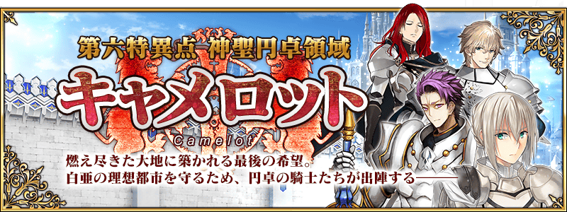
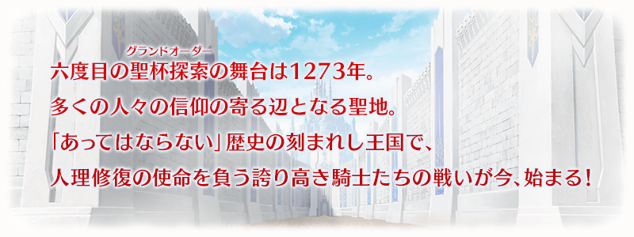
◆公開時間◆
2016年7月25日(一) 預定
◆第六章，終於開幕◆
「第六特異點 神聖圓桌領域 卡美洛」。舞台是圓桌騎士們聚集的聖都。與新登場的Servant們展開緊張刺激的戰鬥。
過去最大規模的主線關卡，由奈須きのこ擔當劇本！
◆開放條件◆
通過「第五特異點 北美神話大戰 合眾為一」後開放。

Fate/Grand Order官方網站內的首頁及展覽室，公開第六章的告知CM。
敬請確認。
所謂Master任務，是在一定期間內達成「通過特定的關卡」「擊倒特定的敵人」等各式各樣條件能獲得報酬的常設任務。
任務內容一定期間後替換。
另外，關於在期間內滿足關卡條件的任務，從期間結束後的1週，可以領取達成報酬。
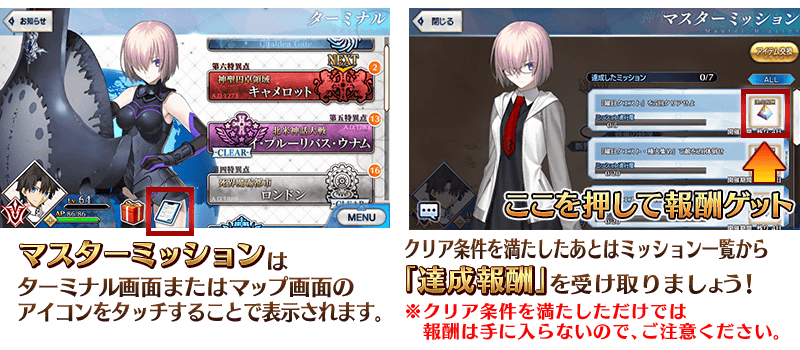
◆新道具「聖晶片」追加！◆
做為Master任務的報酬，追加新道具「聖晶片」。
收集7個聖晶片，就能交換聖晶石1個。
交換在「達文西工作房」內的「交換聖晶片」進行。
※交換的聖晶石為無償分的聖晶石。
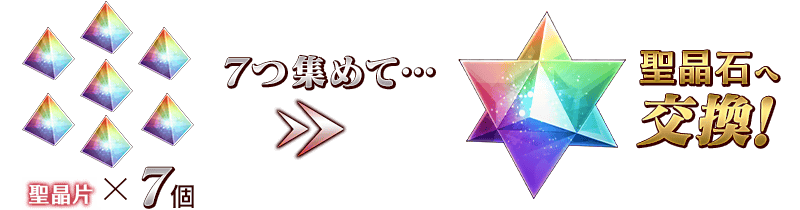
配合主線關卡第六章公開，開放Master等級的上限。
透過此次的開放，最大等級從120變更成130。
◆開放日◆
2016年7月25日(一) ～
從主線關卡第六章，追加新道具4種類！
為新登場Servant的技能強化及靈基再臨必要的道具。
主要可以從主線關卡第六章的敵人做為戰利品來獲得
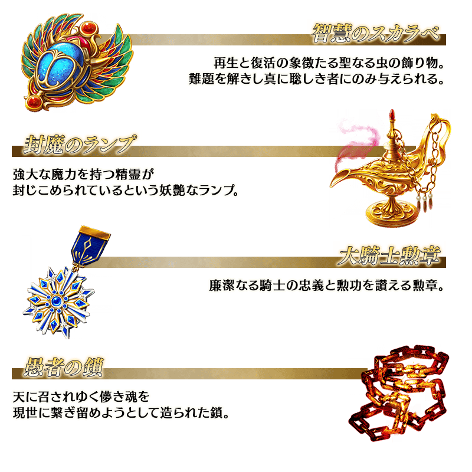

在達文西工房中，追加新選項「特殊召喚」！
能消費新道具「無記名靈基」，從一部份★5(SSR)Servant中交換任意的Servant。
對Servant的交換，10個「無記名靈基」為必要。
「無記名靈基」，在同一個★5(SSR)Servant累計6位以上入手時，每次給予1個至禮物箱。
※目前為止的★5(SSR)Servant的履歷，也是給予的條件對象。
※交換對象Servant，會根據故事的進行狀況增加。另外，不包括期間限定Servant。
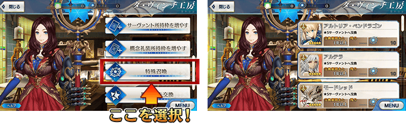
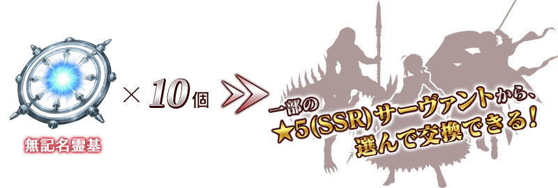
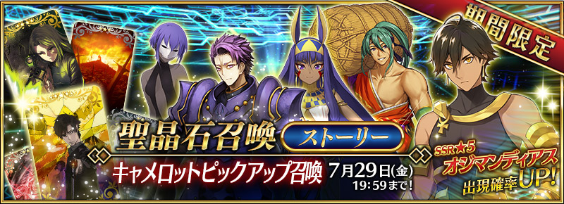
◆「卡美洛Pick Up召喚」期間◆
期間：2016年7月25日(一)～7月29日(五) 18:59
記念第六章公開，以期間限定舉辦卡美洛Pick Up召喚！
※未到達第六特異點的狀態也能進行卡美洛Pick Up召喚。
在「第六特異點 神聖圓桌領域 卡美洛」活躍的Servant「★5（SSR）奧茲曼迪亞斯」、「★4（SR）尼托克里絲」、「★4（SR）蘭斯洛特」、「★3（R）靜謐的哈桑」、「★3（R）俵藤太」新登場！
另外，新概念禮裝「★5（SSR）起源弾」「★4（SR）援護射撃」「★3（R）カムランの戦い」也新登場！
在Pick Up期間中，上述新登場Servant及概念禮裝的出現機率提升！
※上述新登場Servant及新概念禮裝，在Pick Up召喚期間結束後也會在故事召喚抽到。
詳情請在聖晶石召喚畫面左下的召喚詳細確認。
10次召喚★4(SR)以上1張確定和★3(R)以上的Servant1位確定！
※★4(SR)以上確定包含Servant和概念禮裝。
※所謂「出現機率UP」意指比同稀有度的Servant出現機率更高的設定。

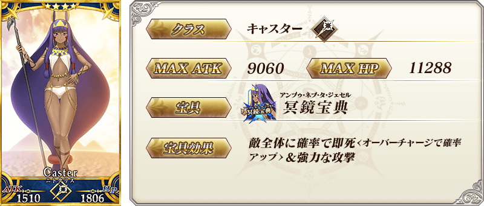

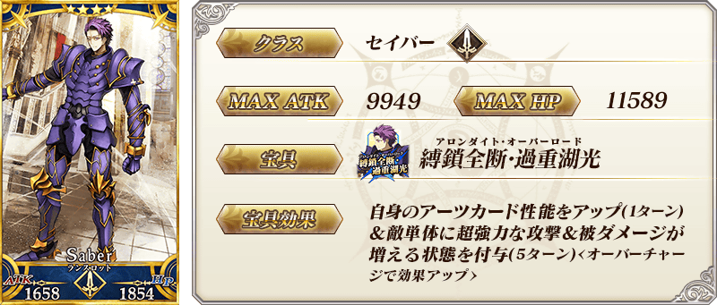
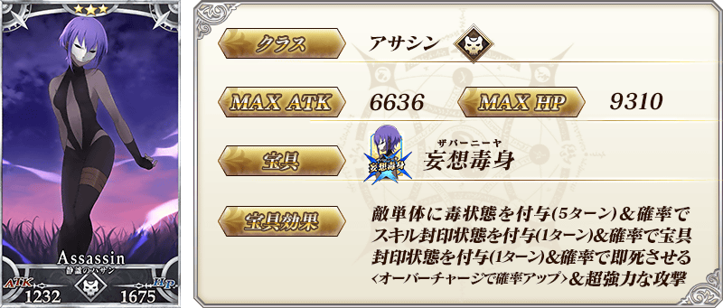
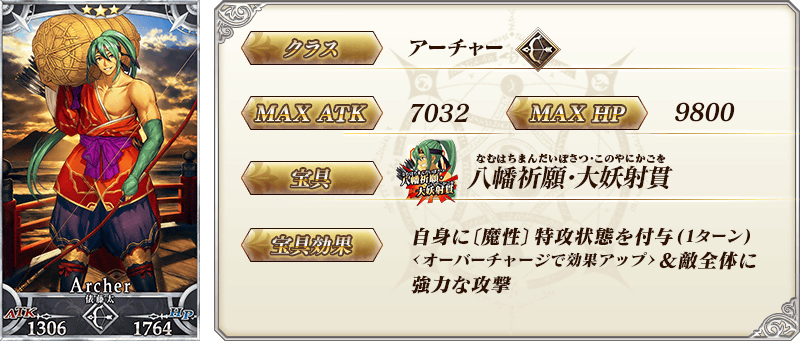
| 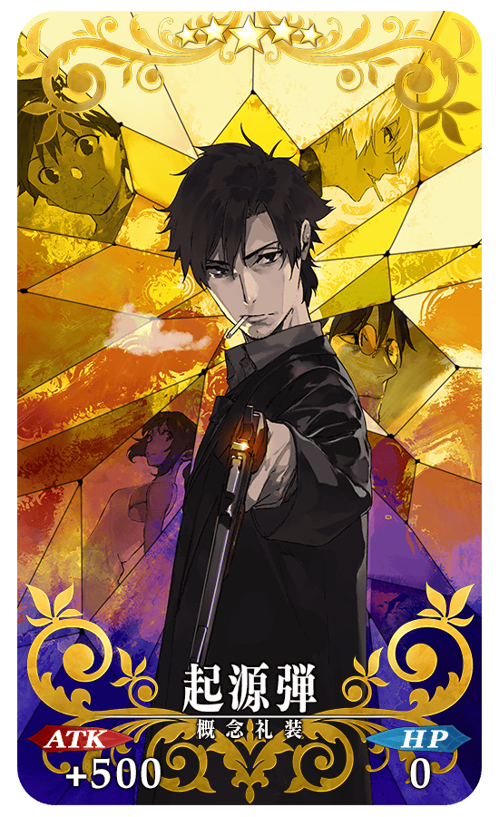 |
★★★★★SSR 起源弾 ATK 500（最大：2000） HP 0 技能 對自身賦予無敵貫通狀態＆賦予〔Caster〕特攻35% |
| 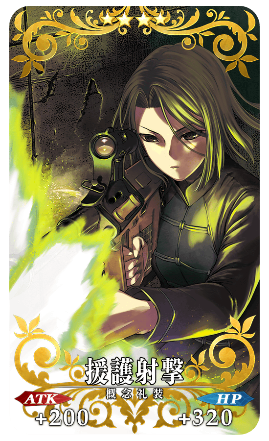 |
★★★★SR 援護射撃 ATK 200（最大：750） HP 320（最大：1200） 技能 對自身賦予傷害加成400狀態＆Critical威力提升15% |
| 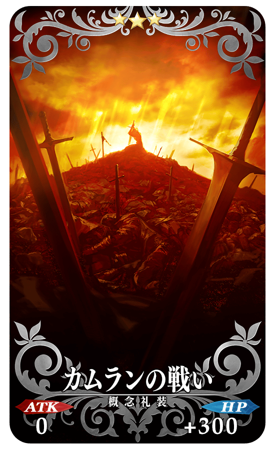 |
★★★R カムランの戦い ATK 0 HP 300（最大：1500） 技能 自身被擊倒時我方全體的NP增加10% |
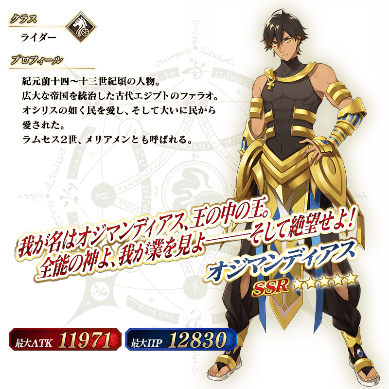